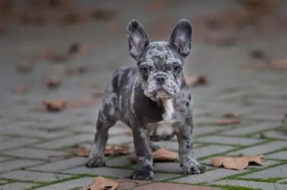
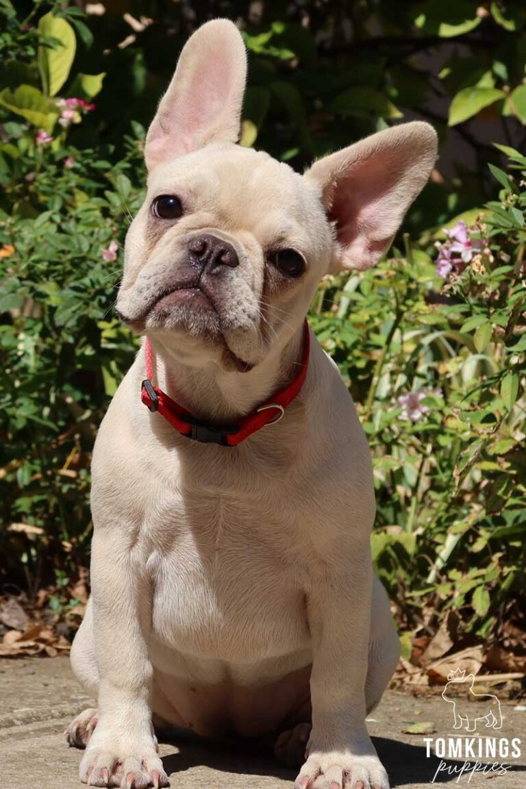

Milo
Milo is a French Bulldog.also known as a Frenchie He is very playful and loves to cuddle. Milo has a merle fluffy coat
Milo's favourite thing to do is play out the back with his football.

Click image for full size view
Milo's Life
- Milo is 3 years old
- Milo loves to play fetch in the backyard
- Milo enjoys cuddling on the couch
- Milo loves having a bath
- Milo enjoys playing with his toys
- Milo loves going out in the car for a drive
Pablo
Pablo is a French Bulldog.also known as a Frenchie He is very playful and loves to go out on walks. Pablo has a platinum coat
Pablo's life
- Pablo is 2 years old
- Pablo loves to go out on walks
- Pablo enjoys playing with his toys
- Pablo loves his treats
- Pablo loves sitting in the sun
- Pablo loves playing in the park
Milo and Pablo
Milo and Pablo are best friends who love to play together. They enjoy running around in the yard and taking walks together.
French bulldogs: Learn more about French Bulldogs

Click image to visit a french bulldog page